Salvador
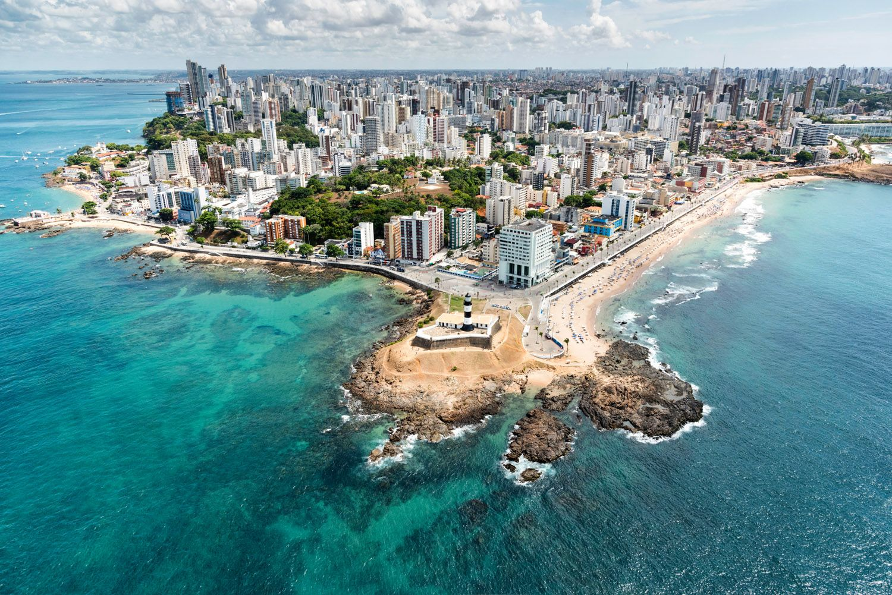Salvador, a capital da Bahia, é um dos destinos turísticos mais icônicos e culturais do Brasil. Conhecida por sua herança histórica, diversidade cultural e belezas naturais, a cidade tem uma importância única no cenário turístico nacional e internacional. Salvador é famosa pelo Carnaval, que é uma das maiores festas do mundo, além de sua música, danças típicas, culinária e manifestações culturais como o Candomblé e o Samba de Roda. A cidade combina influências afro-brasileiras com tradições coloniais portuguesas, resultando em uma rica tapeçaria cultural que atrai turistas de todo o mundo.
As belas praias, o Pelourinho, as igrejas históricas, e o famoso Elevador Lacerda são apenas algumas das muitas atrações que fazem de Salvador um destino imperdível para quem deseja vivenciar a cultura brasileira em toda a sua plenitude.
Principais pontos turísticos
- Pelourinho 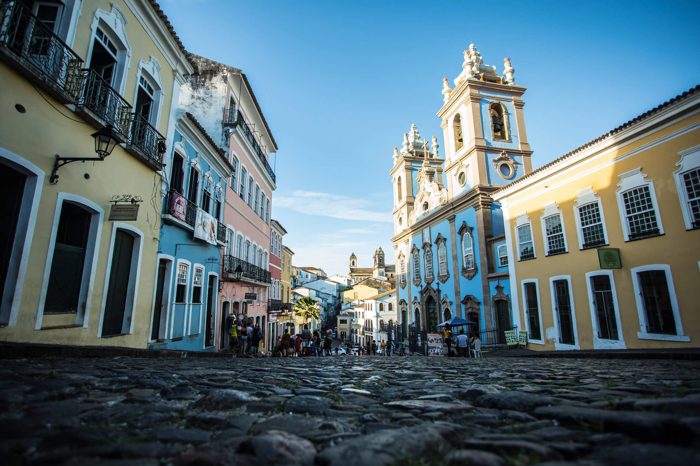
- Elevador Lacerda e Mercado Modelo 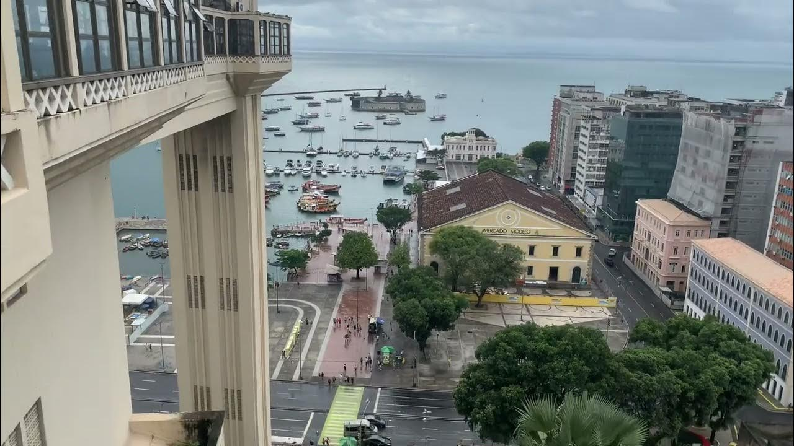
- Igreja de São Francisco 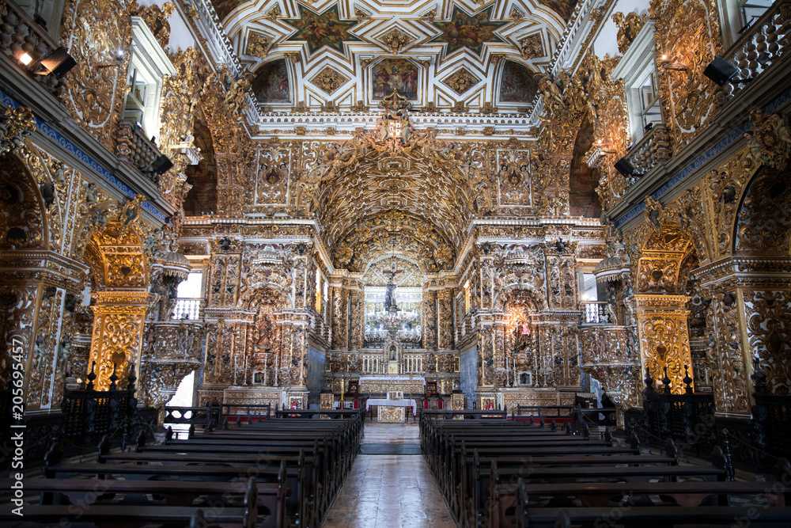
- Farol da Barra 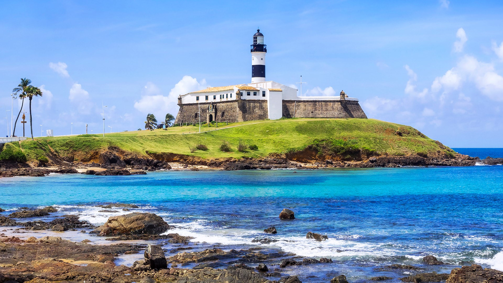
- Igreja do Bonfim 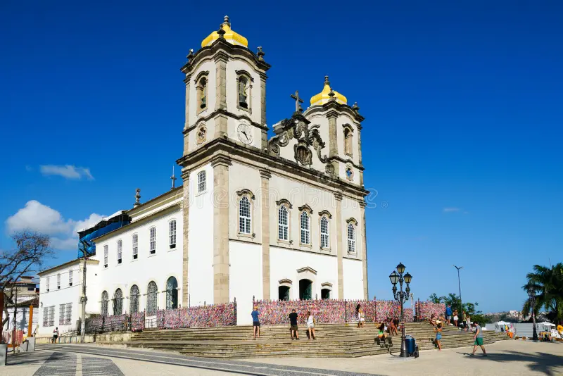
- Ilha de Itaparica 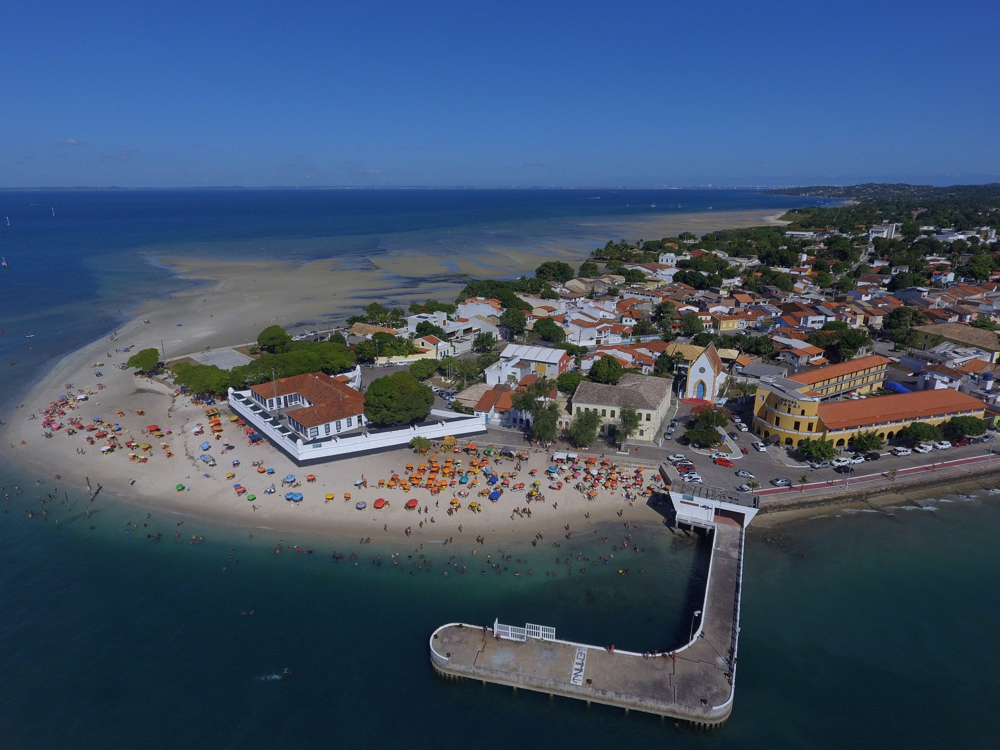
- Solar do Unhão 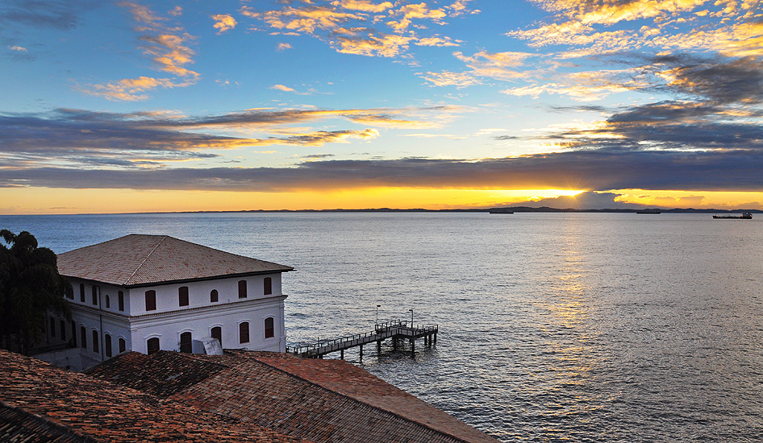
O Pelourinho é o centro histórico de Salvador e um dos maiores patrimônios culturais da cidade. Com ruas de paralelepípedos, igrejas barrocas e casarões coloridos, o Pelourinho é um local onde se pode sentir a história e a cultura baiana em cada esquina. Dentre as atrações do Pelourinho, destacam-se a Igreja de São Francisco e a Igreja do Bonfim, além das muitas opções de lojas de artesanato, restaurantes e música ao vivo.
O Elevador Lacerda é um dos marcos históricos de Salvador e conecta a Cidade Baixa à Cidade Alta. Com sua vista panorâmica para a Baía de Todos-os-Santos, o elevador é uma das atrações turísticas mais procuradas da cidade. Ao lado, está o Mercado Modelo, um centro comercial com artesanato local, roupas e lembranças típicas, além de ótimos restaurantes que servem pratos da culinária baiana.
Localizada no Pelourinho, a Igreja de São Francisco é um exemplo magnífico de arquitetura barroca. Sua decoração interna, com ouro, azulejos portugueses e esculturas de artistas locais, é deslumbrante e reflete o sincretismo religioso de Salvador, combinando influências católicas e africanas.
O Farol da Barra é um dos cartões-postais de Salvador e um dos faróis mais antigos do Brasil. Localizado na ponta da península, ele oferece uma vista deslumbrante da Baía de Todos-os-Santos e é um excelente local para assistir ao pôr do sol. Ao redor, a Praia da Barra é famosa por sua beleza e infraestrutura de quiosques e restaurantes.
A Igreja do Bonfim, localizada no bairro de Bonfim, é um dos maiores símbolos religiosos de Salvador. Conhecida pela famosa fitinha do Bonfim, que é amarrada nas grades da igreja pelos fiéis e turistas, a igreja tem grande importância religiosa e cultural, sendo um local de visitação obrigatória para quem quer conhecer a fé e a tradição baiana.
A Ilha de Itaparica, localizada na Baía de Todos-os-Santos, é uma opção excelente para quem deseja passar um dia fora da cidade, em meio à natureza. Com praias tranquilas e um ambiente mais calmo, a ilha é perfeita para quem busca relaxamento. Existem várias opções de passeios de barco que partem de Salvador até a ilha.
O Solar do Unhão é um casarão colonial que abriga o Museu de Arte da Bahia. Com uma vista incrível da Baía de Todos-os-Santos, o museu possui um acervo significativo da arte baiana e brasileira, além de promover eventos culturais, como exposições de artistas contemporâneos e apresentações de música.
Principais pontos gastronômicos
- Bahia Marina 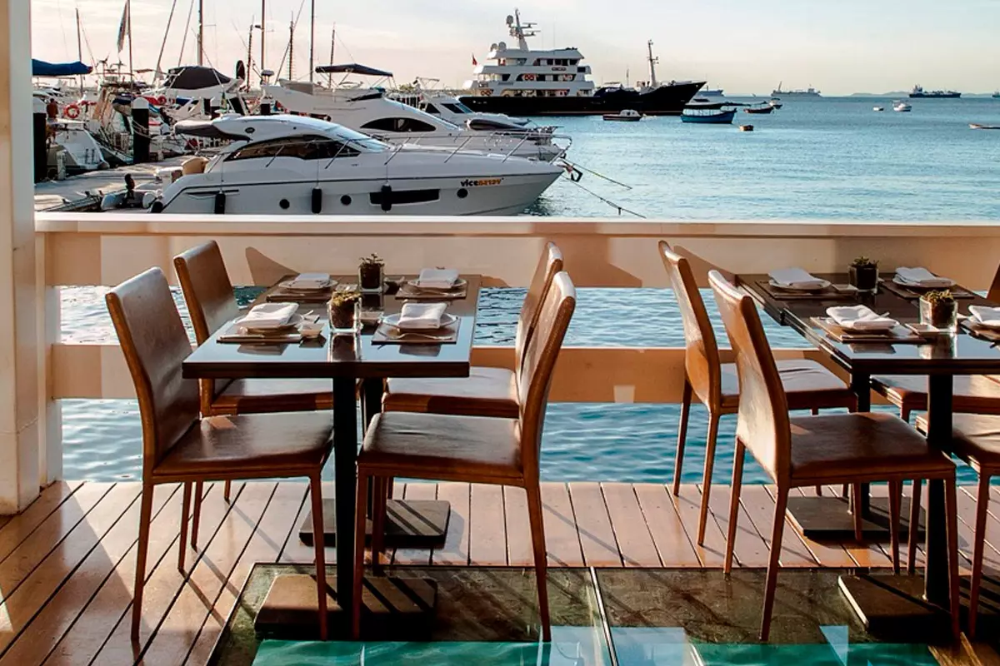
- Localização: Baía de Todos os Santos.
- Bar Quintal do Raso da Catarina 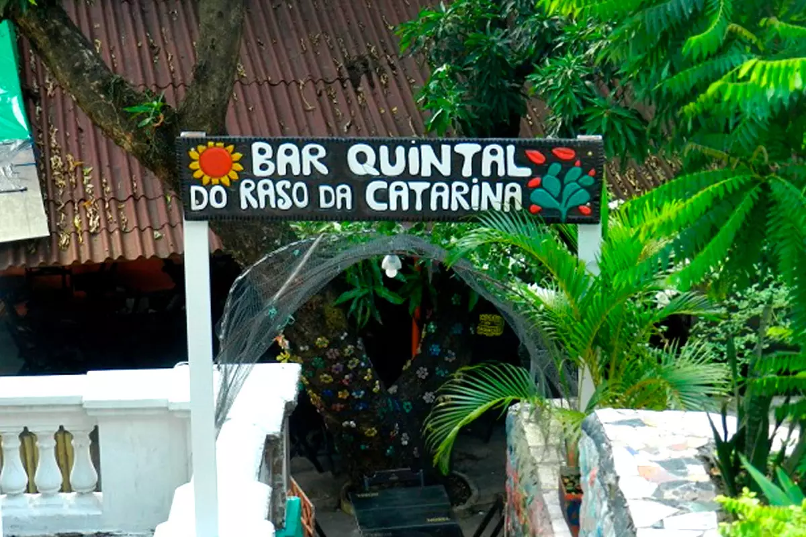
- Localização: Bairro Campo Grande.
- Companhia da Pizza 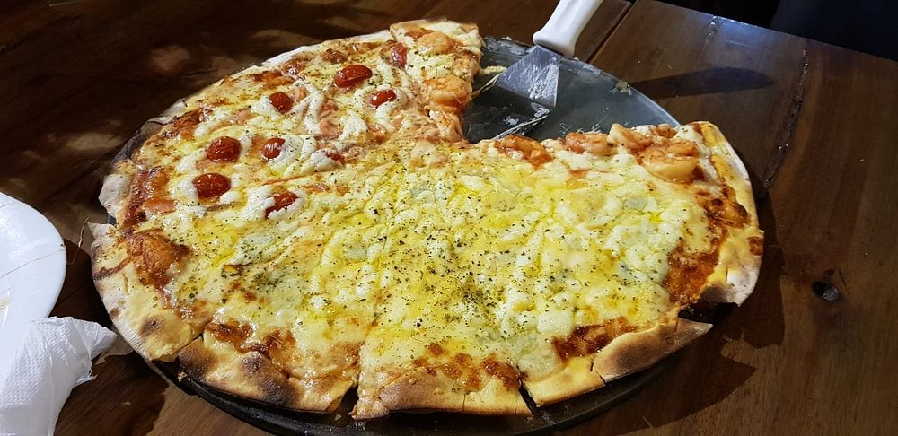
- Localização: Bairro Rio Vermelho.
- Largo da Dinha 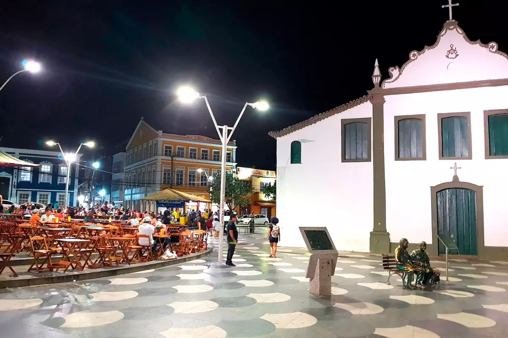
- Localização: Bairro Rio Vermelho.
A charmosa Bahia Marina é destino perfeito para os amantes do mar e da alta gastronomia. Com uma localização privilegiada, é considerada um dos cartões-postais de Salvador e um atrativo para quem busca diversão com muito conforto, vista encantadora para a Baía de Todos os Santos e um pôr do sol magnífico. Além do centro de lazer náutico, a Bahia Marina possui lojas de produtos e serviços náuticos e um centro gastronômico que reúne alguns dos melhores restaurantes da cidade.
Quem vai à Salvador e inclui a Bahia Marina no roteiro da viagem, não pode perder a oportunidade de se deliciar com a variedade gastronômica do Marina Gourmet, um centro que reúne restaurantes refinados e ambientes aconchegantes no mesmo local, debruçados sobre a Baía de Todos os Santos.
O Bar Quintal Raso da Catarina é um espaço que resiste desde o final dos anos 70. Nomeado em referência a uma região seca da caatinga baiana, o local serve muito bem a clientela com uma enorme diversidade de bebidas, além de uma carta de mais de 200 tipos de cachaça. Quem visita o Bar Quintal Raso da Catarina também pode desfrutar de comidas saborosas, típicas da culinária do interior do estado (com opções veganas), bons preços e atendimento personalizado.
O Bar Quintal Raso da Catarina costuma reunir um público mais alternativo e boêmio, principalmente os admiradores de uma boa cachaça, por estar fora do eixo dos bares mais badalados da cidade. Além disso, o endereço tem mesinhas ao ar livre, clima despojado, decoração criativa revestida com pedaços de azulejos dos mais variados tipos e foi campeão do Veja Comer&Beber Salvador 2018/2019.
Produzindo pizzas com massas artesanais e assadas no forno a lenha, a Cia da Pizza já foi cinco vezes eleita como a melhor pizzaria de Salvador pela revista Veja. Localizada no tradicional e boêmio bairro do Rio Vermelho, o espaço é um excelente destino para quem deseja experimentar massas leves, finas, crocantes e deliciosamente recheadas. Além das famosas pizzas, o estabelecimento também dispõe de outras opções em seu cardápio, como calzones, panzones, pratos especiais, massas artesanais e saladas.
Pizzas tradicionais, doces e com bordas recheadas são algumas das muitas opções disponíveis no extenso cardápio da Cia da Pizza. Escolher uma taça de vinho, tinto ou branco, para acompanhar o pedido ou optar por uma deliciosa sobremesa após o jantar também são excelentes escolhas para quem visita o local.
O Largo da Dinha é um famoso ponto de encontro dos soteropolitanos e turistas, especialmente às noites. Popularmente conhecido pelo apelido da maior baiana de acarajé da Bahia, o Largo de Santana reúne um complexo de bares com mesas externas com vista para ao mar e para pequena igreja que completa o cenário. E como dá nome ao local, quem visita o Largo da Dinha aproveita para provar o acarajé mais famoso da cidade. O Largo da Dinha é uma opção muito popular de Salvador. O fim da tarde oferece um pôr do sol admirável e a noite o fluxo de pessoas aumenta ainda mais, reunindo gente de todos os cantos do mundo. Por estar localizado bairro mais boêmio da cidade, o local dispõe de diversas opções de bares, restaurantes, baladas e barracas de comidas típicas.
O Largo da Dinha é um destino imperdível para comer deliciosos petiscos, tomar uma cerveja ou um suco, e conversar em uma mesa beira mar como um típico baiano. O local também serve como palco para apresentação de pequenos grupos artísticos da capital, que acontecem com frequência.
Principais pontos culturais
- Museu de Arte da Bahia (MAB) 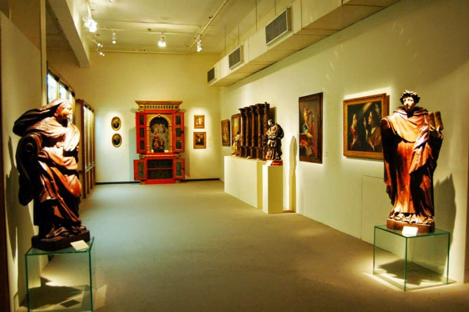
- Localização: Corredor da Vitória.
- Teatro Castro Alves 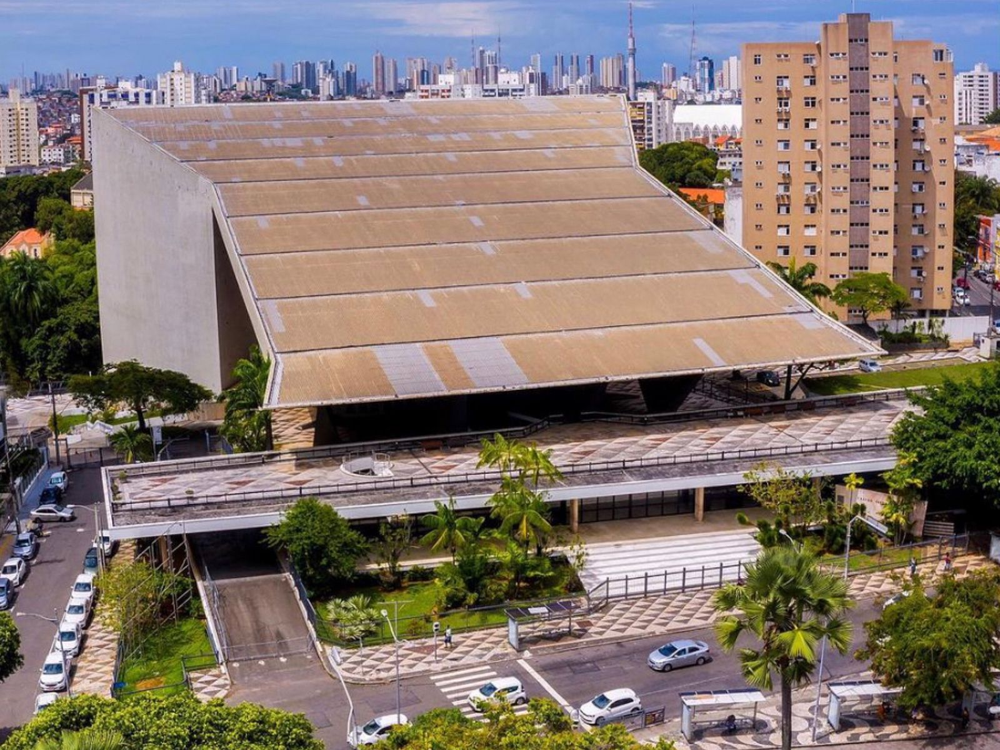
- Localização: Bairro Campo Grande.
- Festa de Iemanjá 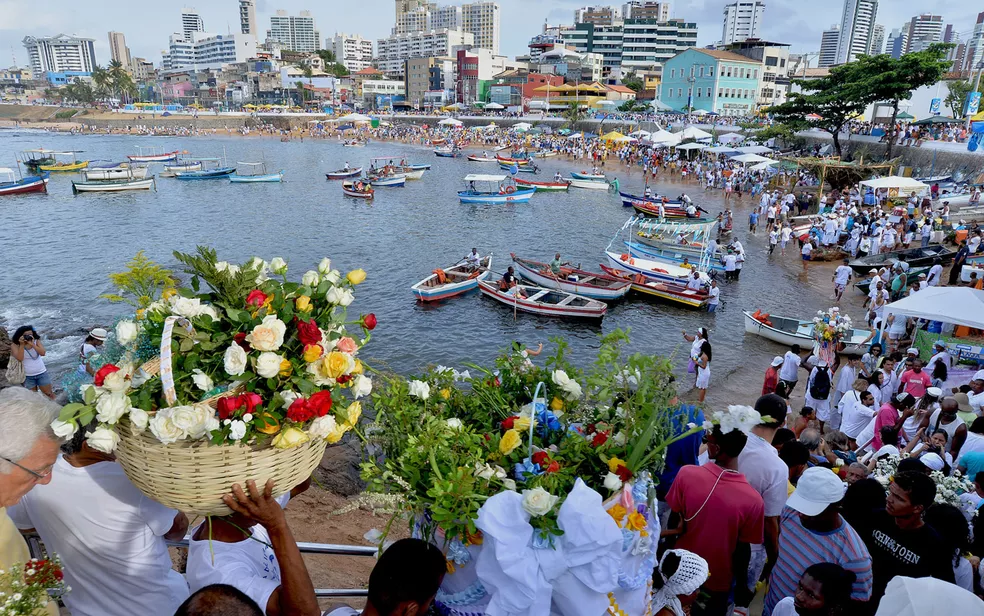
- Localização: Praia do Rio Vermelho.
- Carnaval de Salvador 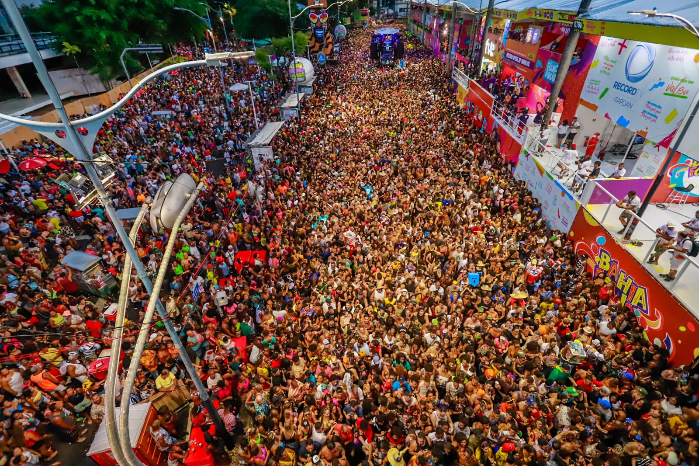
- Localização: Diversos pontos de Salvador.
O Museu de Arte da Bahia é um dos maiores centros culturais de Salvador e abriga uma vasta coleção de arte brasileira e baiana, com obras que vão do período colonial até a contemporaneidade. Localizado no Solar do Unhão, o museu é um local importante para conhecer a produção artística local e sua evolução ao longo dos séculos.
O Teatro Castro Alves é o principal espaço de apresentações culturais em Salvador, com uma programação que inclui espetáculos de música, teatro e dança. O teatro é uma verdadeira referência na cidade, com sua arquitetura imponente e uma agenda de eventos culturais de alta qualidade.
A Festa de Iemanjá, celebrada no dia 2 de fevereiro, é uma das maiores festas religiosas de Salvador, dedicada à rainha do mar. A festa ocorre na Praia do Rio Vermelho e reúne milhares de fiéis que fazem oferendas e danças para a deusa afro-brasileira, em um ambiente de celebração e devoção.
O Carnaval de Salvador é mundialmente famoso por sua grandiosidade e energia. As ruas de Salvador se transformam em um verdadeiro espetáculo de música, dança e alegria. O Circuito Barra-Ondina e o Circuito Campo Grande são os locais mais tradicionais, onde o Axé, o Samba Reggae e o Bloco Afros se apresentam, com milhares de foliões participando da festa.